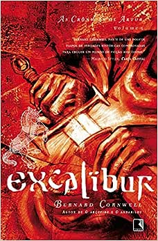

Harry Potter e a Ordem da Fênix
Sinopse
Parece impossível, mas, no bairro mais Muggle do mundo Muggle, Harry é emboscado por Dementors! Para salvar a sua vida e a do primo Dudley, Harry não tem outra hipótese senão usar magia - mesmo sabendo que isso significará a sua expulsão mais que certa de Hogwarts. Enquanto o Ministério da Magia continua a não acreditar que o terrível Senhor das Trevas está de volta, Voldemort e os seus fiéis Devoradores da Morte já começaram a preparar o seu regresso ao poder. Porém, há uma nova esperança: uma antiga ordem secreta, da qual os pais de Harry fizeram parte, voltou a organizar-se e Dumbledore está atento.
Fonte: Google Books
| Data |
Autor |
Idioma Original |
Gêneros |
Número de páginas |
Editora |
| 21 de junho de 2003 |
J.K. Rowling |
Inglês |
Romance, Ficção juvenil, Literatura fantástica |
750 |
Pottermore Publishing |
O Senhor dos Anéis: A Sociedade do Anel

Sinopse
A Sociedade do Anel O volume inicial de O Senhor dos Anéis, lançado originalmente em julho de 1954, foi o primeiro grande épico de fantasia moderno, conquistando milhões de leitores e se tornando o padrão de referência para todas as outras obras do gênero até hoje. A imaginação prodigiosa de J.R.R. Tolkien e seu conhecimento profundo das antigas mitologias da Europa permitiram que ele criasse um universo tão complexo e convincente quanto o mundo real. A Sociedade do Anel começa no Condado, a região rural do oeste da Terra-média onde vivem os diminutos e pacatos hobbits. Bilbo Bolseiro, um dos raros aventureiros desse povo, cujas peripécias foram contadas em O Hobbit, resolve ir embora do Condado e deixa sua considerável herança nas mãos de seu jovem parente Frodo. O mais importante lega...
Fonte: Google Books
| Data |
Autor |
Idioma Original |
Gêneros |
Número de páginas |
Editora |
| 29 de julho de 1954 |
J.R.R. Tolkien |
Inglês |
Literatura fantástica, Alta fantasia, Ficção de aventura, Romance de cavalaria, Fantasia heroica |
576 |
HarperCollins Brasil |
A Máquina do Tempo

Sinopse
O primeiro e mais famoso livro sobre viagem no tempo chega em edição especial, com ilustrações inéditas, tradução primorosa e extras. Ao contar a história de um cientista inglês que embarca em uma fabulosa jornada a um mundo futuro, desconhecido e cheio de mistérios, H. G. Wells inaugura um dos principais temas da ficção científica.
A bordo de sua Máquina do Tempo, o cientista que narra esta história parte do século XIX para o ano de 802701. Nesse futuro distante, ele descobre que o sofrimento da humanidade foi transformado em beleza, felicidade e paz. A Terra é habitada pelos dóceis Eloi, uma espécie que descende dos seres humanos e já formou uma antiga e enorme civilização. Mas os Eloi parecem ter medo do escuro, e têm todos os motivos para isso: em túneis subterrâneos vi...
Fonte: Google Books
| Data |
Autor |
Idioma Original |
Gêneros |
Número de páginas |
Editora |
| 18 de junho de 2018 |
H. G. Wells |
Inglês |
Ficção científica, Literatura fantástica, Ficção distópica, Viagem no tempo, Romance científico |
176 |
Suma |
Trilogia Jogos Vorazes

Sinopse
Este livro reúne os três volumes da série Jogos Vorazes, fenômeno mundial da literatura. Pioneiro na escrita distópica, a trilogia Jogos Vorazes se passa em um futuro pós-guerras e destruição, em um local antes conhecido como América do Norte e agora chamado de Panem. O novo país é dividido em treze Distritos, que são controlados pela Capital, totalmente autoritária. Tudo que é produzido nos Distritos abastece obrigatoriamente a Capital, sendo terminantemente proibido que os Distritos consumam o que produzem. Um dia, o Distrito 13 se rebela, mas acaba sendo destruído. Para punir os demais Distritos e evitar novas rebeliões, a Capital cria os Jogos Vorazes, um reality show anual em que cada região do país deve ceder, por meio do sorteio chamado Colheita, um menino e uma menina entre 1...
Fonte: Google Books
| Data |
Autor |
Idioma Original |
Gêneros |
Número de páginas |
Editora |
| 24 de agosto de 2010 |
Suzanne Collins |
Inglês |
Ficção científica |
1.240 |
Rocco |
Excalibur - As crônicas de Artur

Sinopse
O AGUARDADO TERCEIRO VOLUME DE AS CRÔNICAS DE ARTUR Excalibur é o último volume da trilogia As crônicas de Artur, do escritor inglês Bernard Cornwell sobre o lendário guerreiro Artur, que passou para a história com o título de rei, embora nunca tenha usado uma coroa. Um dos mais importantes autores britânicos da atualidade, Cornwell já foi traduzido para mais de dezesseis línguas e seus romances alcançaram rapidamente o topo das listas de mais vendidos: mais de 4 milhões de exemplares em todo o mundo. A chave de seu sucesso está na criteriosa pesquisa histórica e na narrativa envolvente com a qual Cornwell disseca a vida de seus personagens. Neste terceiro volume da série, iniciada com O rei do inverno e O inimigo de Deus, o escritor imerge o leitor em uma Britânia cercada pela escuridã...
Fonte: Google Books
| Data |
Autor |
Idioma Original |
Gêneros |
Números de páginas |
Editora |
| 31 de julho de 2014 |
Bernard Cornwell |
Inglês |
Romance, Romance histórico, Literatura fantástica, Ficção histórica |
532 |
Record |